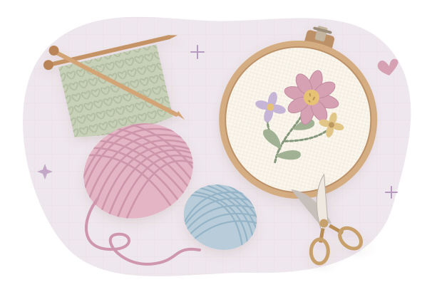

Follow your curiosity
Choose your craft, your comfort level, and a little time you can call your own.
That craft you've been meaning to try?
Let's turn it into something you can actually finish.
A few supplies, a little guidance, one happy stitch at a time.

AI-generated visual references, not photos from the tutorials. Colors, proportions, and stitch details may vary. Follow the tutorials for technique.
Check your stash first. You might have a head start.
Shopping links open store search results, with no affiliate fees. Compare sizes and quantities before buying. Prices and availability vary.
JOANN has closed. Michaels welcomes JOANN shoppers ↗ and carries some of its former brands.
Pause, rewind, and take it one stitch at a time.
Curated lessons, not live rankings. View counts are rounded research snapshots checked October 26, 2026 and may change. Project searches are labeled separately.
Missed a day? Pick up where you left off. This is your hobby, and the calendar can wait.
Choose your craft, your comfort level, and a little time you can call your own.
A practical supply list and popular video lessons give you a place to start.
Small goals and built-in breathing room help you finish a project at your pace.
You don't have to be good at it
for it to be good for you.